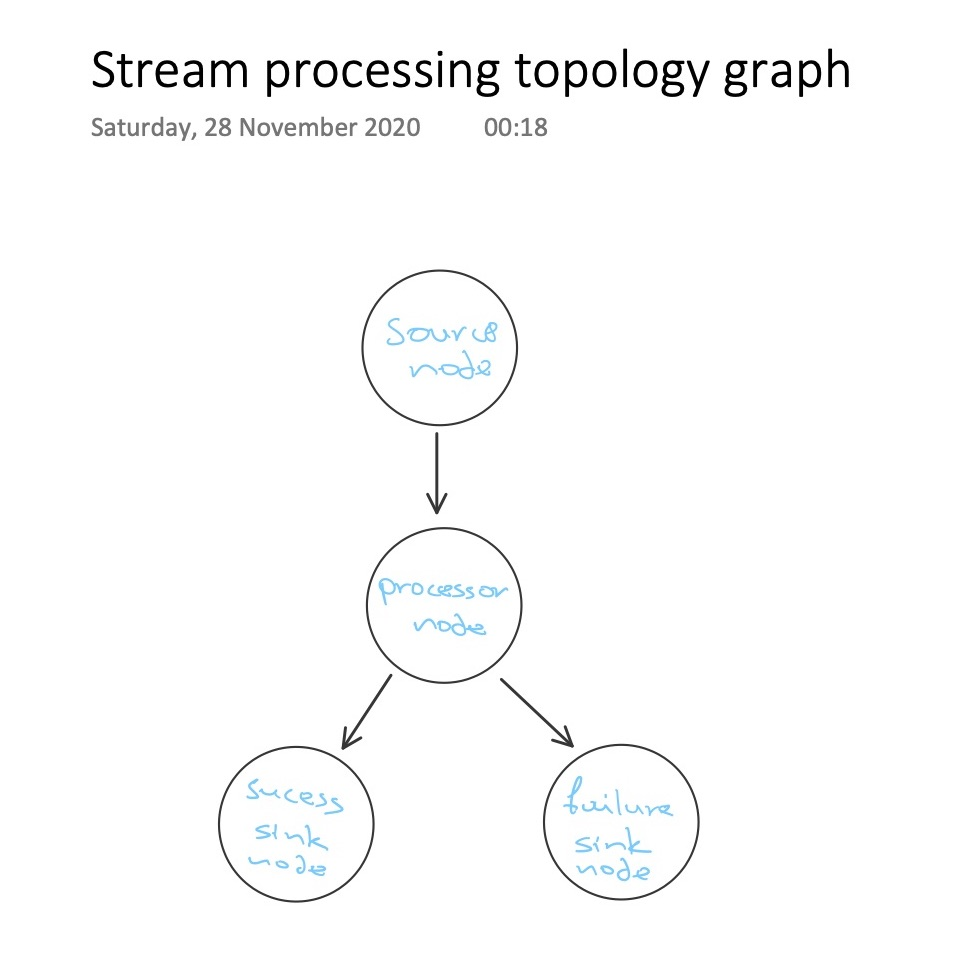
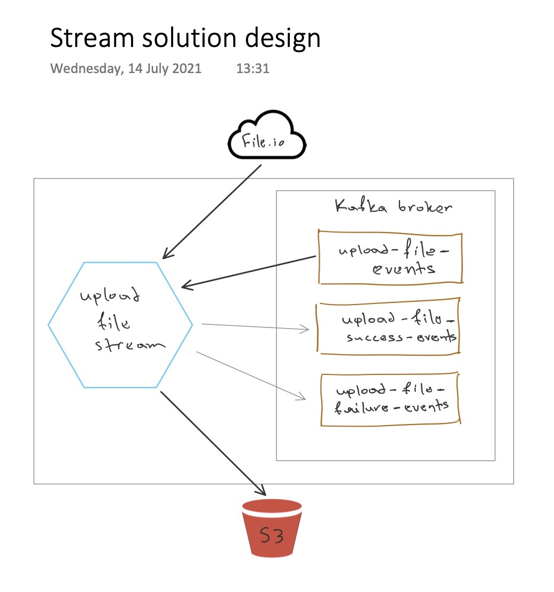
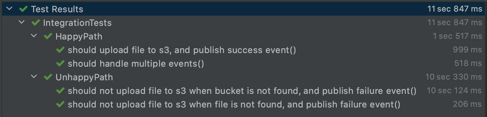

4 minutes
Integration tests with testcontainers
Lately…
Not a new thing, but lately I’ve been trying to focus more on testing the behaviour of an application rather than its implementation details. Those details are variable; so our behavioural test (Integration test?) shouldn’t depend on them.
For example if our application exposes a RESTful CRUD api, storing the resource into some database – changing the library used to connect to the database and run queries at it, must not change the fact that our application should still behave the same.
I’m not a fan of mocking external dependencies into my tests, especially if the application is heavy on them. I prefer a “test through the wire”, one that does a real connection.
It feels like a docker-compose context would be perfect for such testing…
I hope you know this already, but if you don’t, there is a very interesting library wrapping Docker commands, which we can use to set our environment with docker containers ready for our testing. And all that programmatically within our test source code. And, yes, of course I’m talking about Testcontainers
My Demo app
For the sake of this blog post, the demo application I’ve designed has a variety of dependencies that makes it a bit hard to test overall.
On a high level, we have a streaming application that processes events about files which we need to download from an external api, and then save them into an AWS S3 bucket.
The technology I used for the application above is Kafka, and specifically I used the Processor API to create a processor topology to represent my business logic.
For demoing purposes, the external api from which I download the file to continue the flow, I used the file.io – in reality it could be any third-party provider.
Topology graph
Our topology graph looks like this 
Quite simple, right?
In code, the DSL describing the above topology is even simpler, once you get your hands around Kafka
KafkaStreams(StreamsBuilder().build().run {
addSource(SOURCE_NODE,
LongDeserializer(),
UploadFileEventDeserializer(),
UploadFileEvent.topic)
addProcessor(PROCESSOR_NODE,
ProcessorSupplier { UploadFileEventProcessor(fileIOApi, s3Config, s3) },
SOURCE_NODE)
addSink(SINK_SUCCESS_NODE,
UploadFileSuccessEvent.topic,
LongSerializer(),
UploadFileEventBaseSerializer(),
PROCESSOR_NODE)
addSink(SINK_FAILURE_NODE,
UploadFileFailureEvent.topic,
LongSerializer(),
UploadFileEventBaseSerializer(),
PROCESSOR_NODE)
}, this.kafkaConfig.toProperties())
Our business logic lives into this UploadFileEventProcessor instantiated by Kafka’s ProcessorSupplier.
Solution diagram

Setting up Testcontainers
First is our gradle imports, and Testcontainers thankfully provides us with a bom we can use, so we can have the same version across all libraries for no conflicts.
implementation platform("org.testcontainers:testcontainers-bom:$testContainersVersion")
testImplementation "org.testcontainers:kafka"
testImplementation "org.testcontainers:mockserver"
They do also provide specific containers of widely used technologies to abstract the way we spin them up.
As seen above org.testcontainers:kafka and org.testcontainers:mockserver.
For other containers that there is no specific module, we can of course use the GenericContainer
which works as expected, the same way you’d create and run an instance of a docker container.
There are two ways we can use Testcontainers functionality:
- We can let the library handle the containers’ lifecycle
- Or we can control it manually.
For the automated containers’ lifecycle control, we have to import another module:
testImplementation "org.testcontainers:junit-jupiter:$junit5Version"
This adds some annotations where we can use to declare containers that are maintained by the library – @Container.
In our own example I use the manual approach to have singleton containers. You can read more about the JUnit5 support here 👈
To setup singleton containers with manual lifecycle control, we have to follow a base class pattern:
open class TestContainersBase {
companion object {
// declare your containers...
init {
// start your containers
// plus whatever is needed for the context to load properly
}
}
}
Note how we declare containers that are supported by the framework, and also containers using the GenericContainer type.
private val kafkaContainer = KafkaContainer(DockerImageName.parse("confluentinc/cp-kafka:5.4.3")).apply {
withExposedPorts(KAFKA_CONTAINER_PORT)
}
private val mockServerContainer = MockServerContainer(DockerImageName.parse("mockserver/mockserver")).apply {
withExposedPorts(MOCK_SERVER_CONTAINER_PORT)
}
private val s3MockContainer = GenericContainer<Nothing>(DockerImageName.parse("adobe/s3mock")).apply {
withExposedPorts(S3_MOCK_CONTAINER_PORT)
withEnv("initialBuckets", "file-uploads")
}
To test that we upload to AWS S3 I used S3Mock but we could use LocalStack.
Similarly, to test we download the file
from a third-party api, I used MockServer but another good alternative is Wiremock.
Both of those solutions we can add pairs of request/response expectations, which sounds like mocking, yet it isn’t.
They both run a real http server.
Our init {} would simply look like this:
init {
// init containers
kafkaContainer.start()
mockServerContainer.start()
s3MockContainer.start()
}
Now you may wonder how do we connect to those docker containers when they are started…
We already exposed the ports when we declared the containers in the example up above, but those are not the ports that are actually mapped
into our localhost. Rather, Testcontainers actually exposes them on random free ones to avoid port collisions.
At runtime, we can ask Testcontainers what is the actual mapped port given the port of the container we declared, like so:
s3MockContainer.getMappedPort(S3_MOCK_CONTAINER_PORT)
As soon as we have the host and port that our docker containers run at, the only thing we are left
to do is just pass them into our application’s config via environment, so we can start testing the behaviour
of our application.

Github repo
The demo application is located here 👇
https://github.com/pagidas/kotlin-testcontainers-demo
testcontainers integration tests kafka kafka streams kafka processor topology
840 Words
2021-06-27 13:15